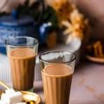

BLACK TEA

Ingredients
- 1. Tea leaves (Camellia sinensis)
- 2. Water
- 3. Sugar
- 4. Milk or creamer
- 6. Spices (cinnamon, ginger, cardamom)
steps
1. Boil water
2. Add tea leaves (1 tsp per cup)
3. Steep for 3-5 minutes
4. Strain and add milk/sugar (optional)
5. Serve and enjoy!
price:20
Back